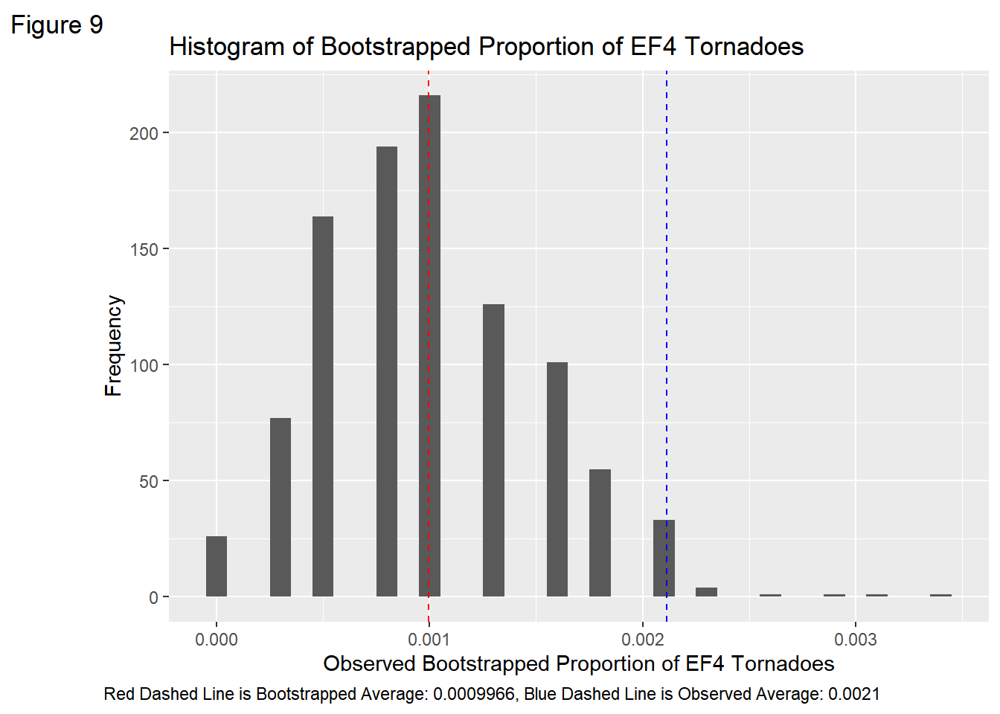

4 Results
Tornadoes that form over water (also known as “Waterspouts”) in shark-infested waters, that also move inwards towards land, do not have the potential to carry sharks over towards mainland cities to cause a disruption similar to the movie ‘Sharknado’.
When plotting the data for sharks and waterspouts, it is apparent that waterspouts are not a common occurrence ( at least in the past five years ). These waterspouts have not caused any major damage to property or crops, and no deaths or injuries have been recorded, they either do not possess the strength to do so and many of these waterspouts do not last longer than an hour. The most action that has happened has been an incident where a waterspout damaged two vehicles and a power line, causing $5000 in damages. But when compared to tornadoes, this is very minuscule. This clearly shows that tornadoes that form on water lack the power necessary to lift sharks. In a perfect world, the better way to compare power is to compare levels on the Tor EF Scale. The scale that ranks how strong a tornado is from EF1 to EF5. However, waterspouts are not considered tornadoes and they do not have a power scale similar to tornadoes.
Considering that tornadic waterspouts are not capable to cause much destruction, plotting them is still valuable to see just how common they are in the United States. Two maps (Figures 2 and 3) are given to see their distribution among the sharks around the coasts of the US and Hawaii. It is important to remember that these maps showcase only the more capable tornadic waterspouts. These kinds of waterspouts are the most common in Florida, while the rest of the United States lacks these specific types of events. Given they are relatively weak, rest can be assured that no sharknados can be possible from a waterspout.


Tornadoes that are strong enough to carry the weight of sharks do not typically form near the coasts.
Visualization of the distribution of tornadoes shows that tornadoes with enough strength to pull sharks from the depths of the water form near enough to the coastlines to cause “shark-terror.” In the United States, EF1 and EF2 tornadoes are very common and form throughout the Midwest and Southeast the most. EF3 tornadoes appear throughout the Midwest and Southwest as well, although they are less common. These three types of tornadoes all seem to be the most common that occur on the coasts of the United States as well. EF4 and EF5 tornadoes on the other hand, are not that common. In our data, there is no data recorded for an EF5 tornado, making them the least common among them all. Our analysis did not have any tornadoes appear in Hawaii.
Tornadoes with less potential are more common throughout the United States. There seems to be an inverse relationship with EF Scale and Count of Tornadoes.


To better illustrate the EF Scale and Tornado Count Relationship, see Figure 6. Further analysis from this point on will disregard tornadoes with an EF Scale lower than or equal to 3, as these don’t have the potential to even toss cars carelessly.
Only considering tornadoes with an EF Score greater than 3, a clearer view at the distribution of EF4 and EF5 tornadoes show that most do not tend to form near the coastlines. There are a few exceptions, yet these still are not close enough to the ocean waters to haul sharks from their habitat.
It seems if a sharknado were to form, it would occur in the Southeast Coast, near Alabama and the Gulf of Mexico. Yet, these tornadoes are still not near enough to the ocean and any population of sharks. See Figure 8 for a closer inspection.
[1] 0.008091882These illustrations show that effective tornadoes are typically going to form on the coasts. In fact, the proportion of these tornadoes greater than EF3 that formed on the coastal data plotted is 0.0021142. This is from 2 tornadoes from the 473 total tornadoes that fall inside the coastline. From the entire dataset, the probabilty a tornado is greater than EF3 is 31/3831 or 0.0080919. This is just from our one sample of analysis.
Assuming perfect conditions (sharks are near the surface of the water), it is still unlikely that capable tornadoes can form close enough to the coasts to become a sharknado.
Using bootstrap sampling with replacement, we can see the greatest probability that dominant tornadoes can form near the coasts to see if, based on our data, enough category 4 tornadoes can form on the coasts for there to be a threat of an actual sharknado.

Given these very specific conditions: sharks are swimming close to the surface of the ocean. An EF5 tornado is the only tornado would be needed to carry sharks such as the hammerhead, tiger, and white shark. Given that there is no EF5 tornado observed in the data and EF4 tornadoes are also known to launch cars a considerable distance, we can assume that EF4 tornadoes will become sharknados when formed near the coast.
Assuming each tornado is independent of each other, and there EF scales are identically distributed, meaning that the relationship between EF scale and location is random. A bootstrap sample can be done to test that the probability of an EF4 tornado forming on the coast will happen at random, meaning that there is a chance that a tornado powerful enough to carry sharks (given the right conditions) will theoretically happen at random.
A null hypothesis of Ho: p = 0.20 is made. This null states that the probability of a EF4 tornado is equal to 20%, that also means all 5 categories have an equal chance of occurring. An alternative hypothesis states Ha: p < 0.20, meaning the chance of a tornado being an EF4 tornado on the coast is less than 0.20.
The observed proportion of EF4 tornadoes in our data is 0.0021 meaning, that in our observed sample, it is very unlikely for EF4 tornadoes to form near the coast. When bootstrapping, a bootstrapped observed proportion of EF4 tornadoes is 0.0080719. The tells us that the probability of our observation happening at random is approaching very closely to 0.
We do not have enough evidence to say that these EF4 and EF5 tornadoes appear on the coasts at random, so we must reject that idea and can confirm that it is not likely that tornadoes with the potential to cause shark-infested terror will be a threat people should be worried about in the future.